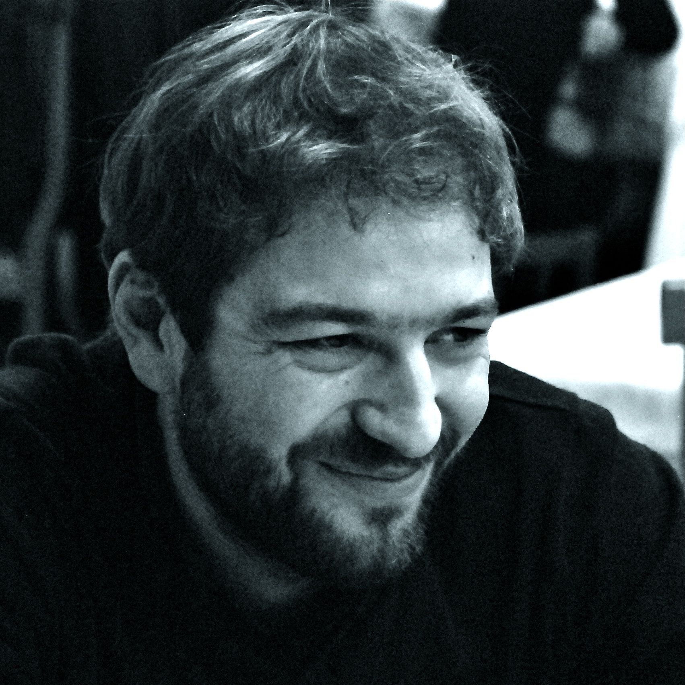

Oltre ad una struttura familiare e un indice di dipendenza molto simile, Italia e Germania hanno ancora un elemento chiave in comune.
I due paesi, nel 2011, hanno investito in spesa pubblica dedicata all’istruzione la stessa percentuale di prodotto interno lordo (4,2%), che tradotto in termini di impegno procapite significa 1411 euro nel Belpaese e 1714 euro in Germania. Un gap di 300 euro che non giustifica certo la differenza di tassi di disoccupazione molto lontani tra loro in pressoché tutte le fasce d’età.

Considerata la popolazione in età attiva, non ha lavoro il 10,7 per cento delle persone in Italia, contro il 5,7 tedesco (dati 2012). Ma il problema aumenta tra i giovanissimi tra i 15 e i 24 anni: se in Germania sono disoccupati 8 ragazzi su cento, in Italia il fenomeno assume dimensioni al limite della sopportazione: 35,3 per cento.
Chi siamo
Caterina Ardizzon
Designer
Luca Bertinetto
Sviluppatore
Alessandra Del Zotto
Classe 1987, laurea in Letteratura e filologia italiana conseguita a Torino e Master di Giornalismo investigativo (Agi) nella sua edizione milanese 2013. Dal 2008 collaboro con testate locali veneziane e torinesi e attualmente svolgo un part-time presso l’ufficio stampa del Consiglio regionale del Veneto.
Giulia Gaido
Classe 1987, laurea in Letteratura e filologia italiana conseguita a Torino e Master di Giornalismo investigativo (Agi) nella sua edizione milanese 2013. Dal 2008 collaboro con testate locali veneziane e torinesi e attualmente svolgo un part-time presso l’ufficio stampa del Consiglio regionale del Veneto.
Sara Perro
Giornalista, 25 anni, nasce in una piccola località della Provincia di Torino. Inizia a scrivere a 18 anni per un mensile ed un settimanale locali con cui collabora tuttora. Terza al concorso giornalistico “Oltre le righe” di Legambiente edizione 2013, collabora con il giornale “Nuova Ecologia”. Si laurea nel 2012 con una tesi in giornalismo e storia delle donne e di genere. Ha conseguito il master AGI di giornalismo investigativo.
Paolo Procaccini
Paolo è giornalista dal 2009. Ha collaborato con diversi giornali tra cui La Stampa e Il Fatto Quotidiano. Per Eco dalle Città ha pubblicato diversi articoli sulla strana vicenda della Dukyc Day Dream e i filtri anti-particolato. Ha concluso il master in giornalismo investigativo a dicembre 2013.